Interested in botanical carbon diamonds? Explore white-label partnership opportunities.
Case Study · Botanical Carbon · OEM
Memorial diamonds grown from desert plant fibers — camel thorn, mulberry leaves, and poplar branches. Proving that even the harshest environments yield carbon worthy of crystallization.
0.5–1.0
Diamond Size (ct)
76
Timeline (Days)
2,800g
Plant Fiber Carbon
CCIC
CCIC Certified
China
Country
3+
Plant Species
Different plant species yield dramatically different carbon content and purity profiles. Desert vegetation like camel thorn and poplar has high silica and fiber content, making purification more complex than flower petals or animal hair.
The project required developing species-specific extraction protocols that could handle tough desert plant fibers while maintaining the ≥99.9% carbon purity threshold required for HPHT synthesis.
BioGem Lab's R&D team developed three parallel extraction tracks — one for each plant species — using variable thermal decomposition temperatures and acid-wash sequences tailored to each fiber's chemical composition.
The result was a unified botanical carbon pipeline that could accept any plant material and output consistent graphite powder quality. This adaptability became a core capability for future botanical partnerships.
The Plant Fiber Diamond project demonstrated that BioGem Lab's carbon extraction technology can handle any botanical source — from soft flower petals to tough desert shrubs — and consistently produce gem-quality diamonds.
This capability opened new B2B categories for partners serving botanical enthusiasts, conservation organizations, and environmental memorial brands.
Seven-stage pipeline transforming desert plant fibers into certified memorial diamonds.
Carbon Collection
Camel thorn, mulberry, poplar sourced
Carbon Extraction
Species-specific decomposition
Purification
Multi-stage refinement ≥99.9%
HPHT Growth
5.5 GPa, 1,450°C synthesis
Cutting
Precision polished to spec
Certification
4C grading + traceability
Delivery
Partner-branded fulfillment
Real process images from the Plant Fiber Diamond production — from raw desert vegetation to purified carbon and finished gems.
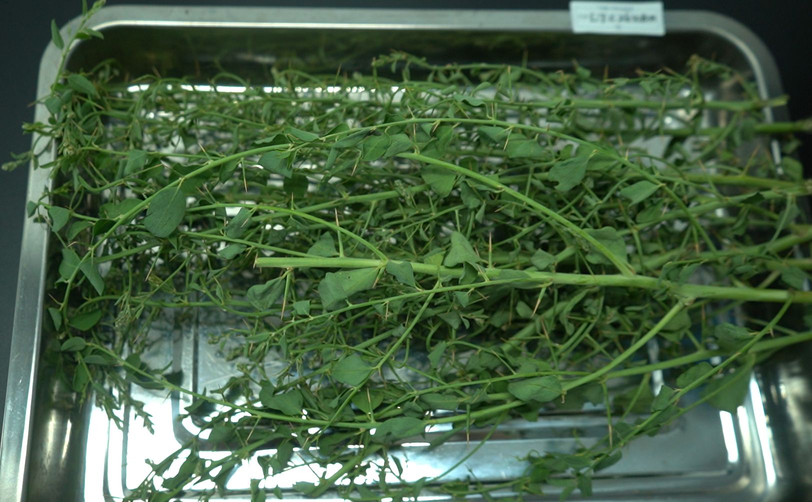
Camel Thorn Plant
Desert shrub sourced for carbon extraction
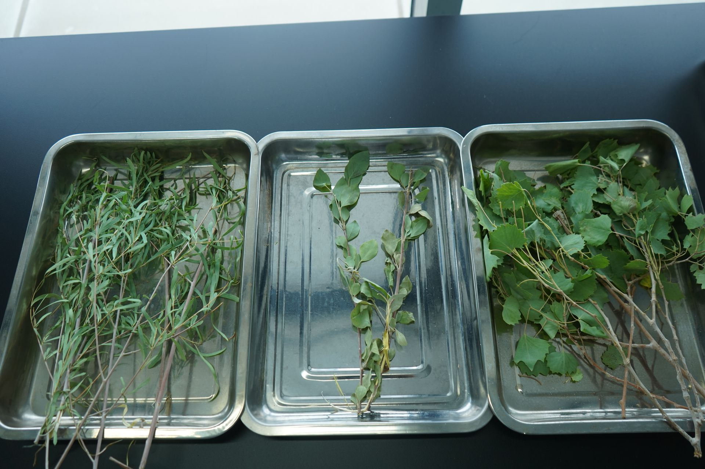
Populus Euphratica
Desert poplar branches collected for processing
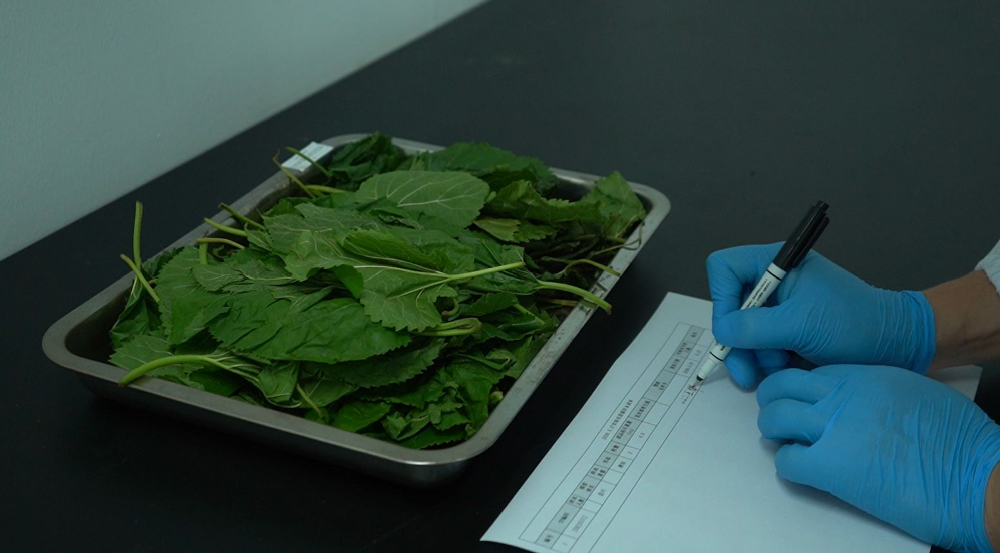
Mulberry Leaves
High-yield carbon source for extraction
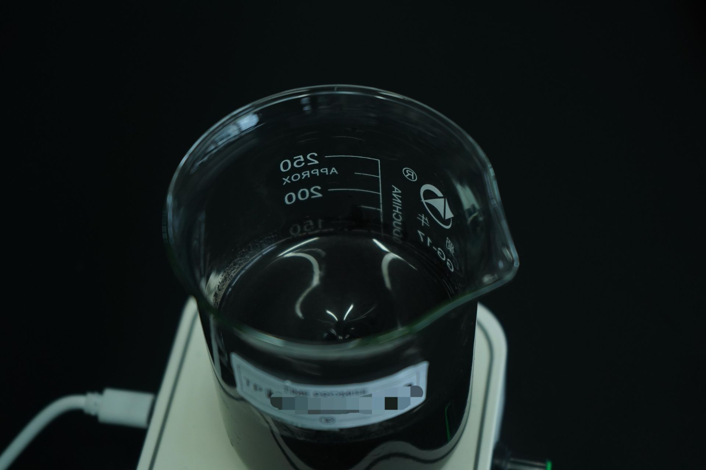
Sample Sorting
Organizing botanical samples by species
Tray Preparation
Samples arranged for dehydration stage
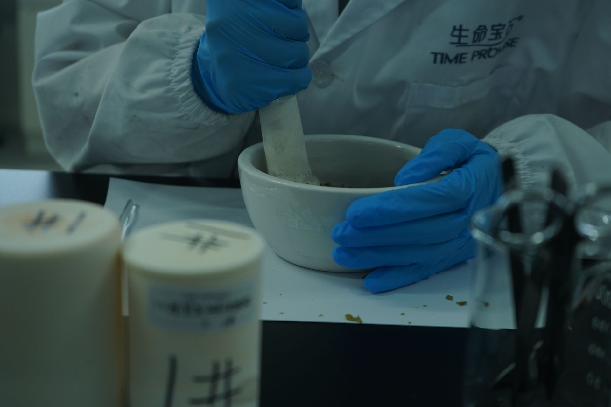
Batch Processing
Multiple trays for parallel extraction runs
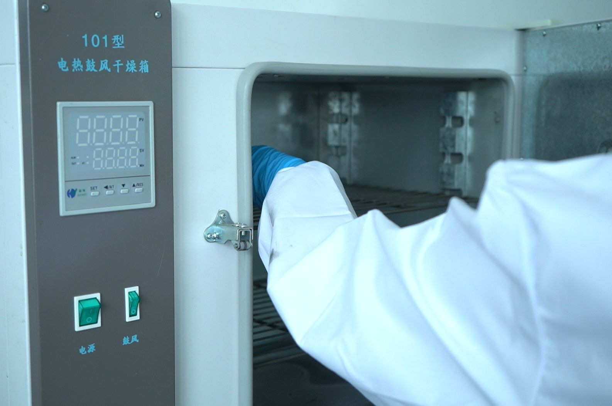
Drying Oven
Controlled dehydration before grinding
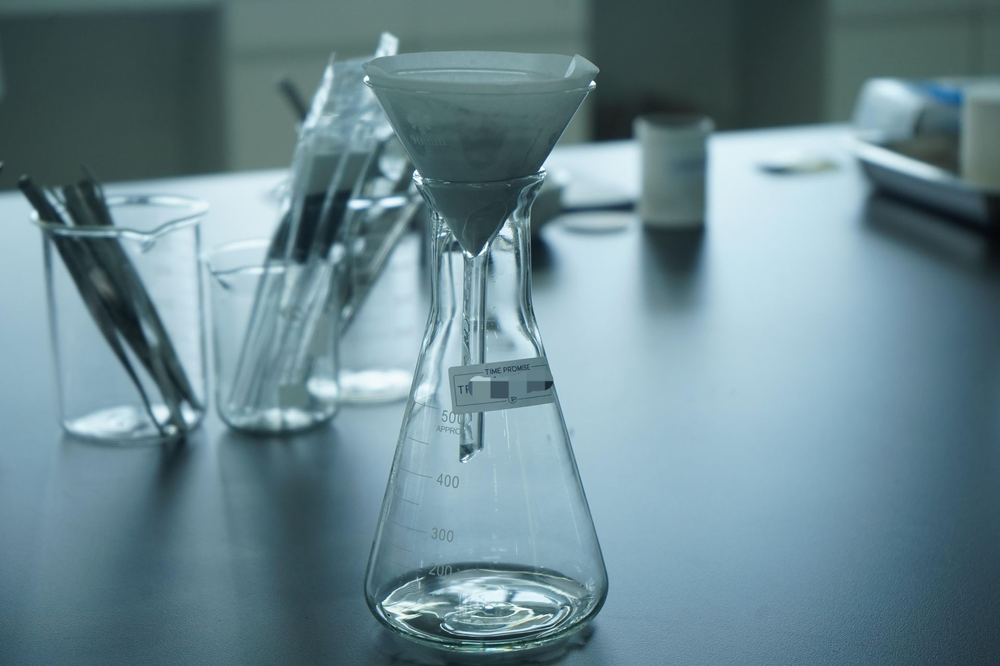
Manual Grinding
Precision grinding to uniform particle size
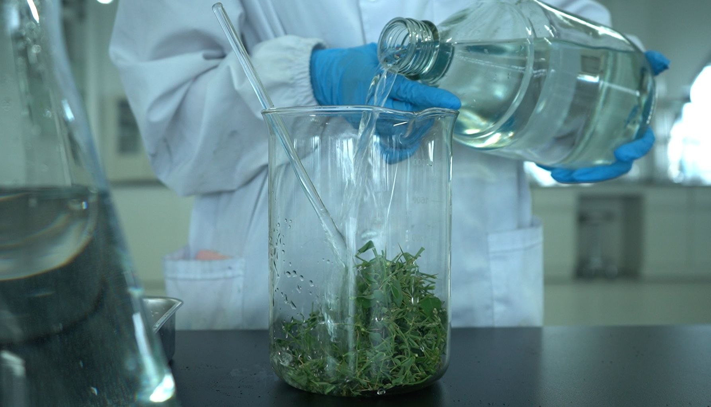
Chemical Extraction
Decomposition and carbon isolation
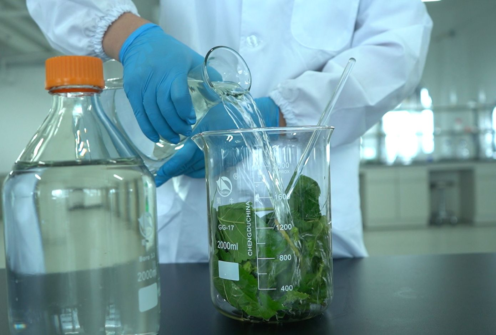
Solution Transfer
Moving extract between purification stages
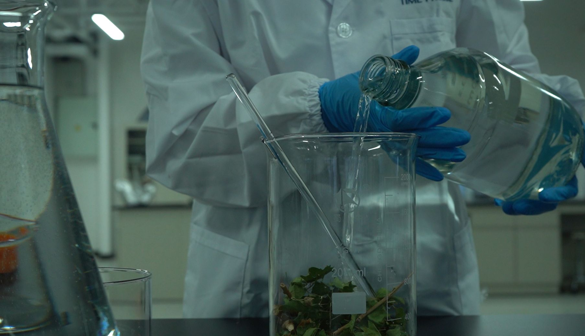
Precision Pouring
Controlled transfer to avoid contamination
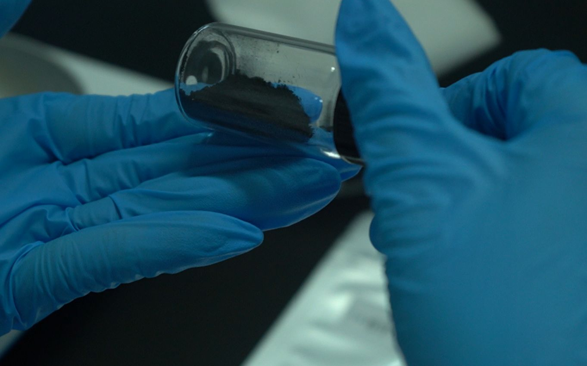
Purified Carbon Powder
Final graphite powder ready for HPHT
"We never imagined that desert shrubs could become diamonds. The purity BioGem Lab achieved from camel thorn was remarkable — it proved that any plant material, no matter how tough, can be transformed."
Partner Representative
Botanical Conservation Project, China · OEM Client
In theory, any carbon-bearing organic material can be processed. The Plant Fiber Diamond project proved this across three very different species: soft mulberry leaves, woody poplar branches, and fibrous camel thorn. Each required a tailored extraction protocol, but all produced gem-quality diamonds.
The HPHT synthesis process standardizes the final diamond properties. After purification, the carbon source is chemically identical — regardless of whether it came from a flower, a tree, or grain. Color and clarity are determined by growth parameters, not the original botanical source.
This varies by plant species and moisture content. Dried plant material typically requires 15g for a 1-carat diamond. BioGem Lab's team can evaluate any sample and provide a carbon yield estimate before committing to production.
Absolutely. The Plant Fiber Diamond project established the technical and commercial viability of botanical carbon diamonds. Partners serving conservation, gardening, botanical, and environmental markets can now offer this product category under their own brand.
From desert shrubs to flower petals — any plant can become a diamond. Let's discuss how botanical carbon fits your brand.